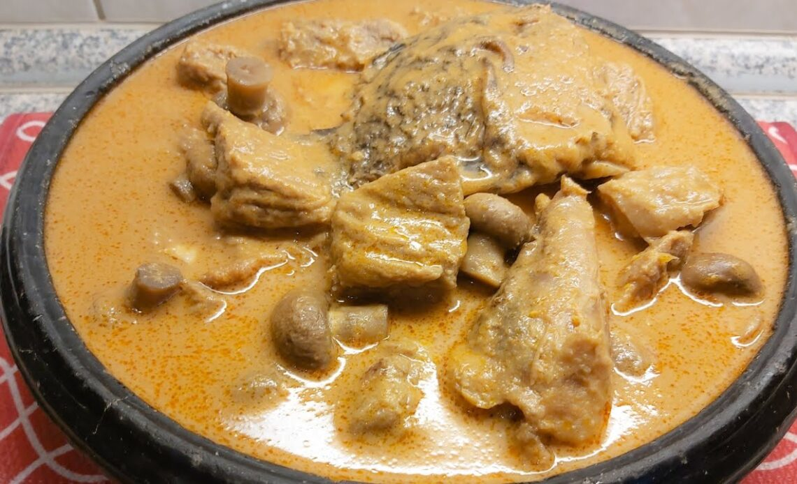

Groundnut Soup
Preparation of Groundnut soup
Ingregients
- 2 medium onions, 1 chopped into pieces
- 5 medium cloves garlic, divided
- 28g fresh ginger (about a 1-inch knob), divided
- 2 teaspoons tomato paste
- 2 pounds bone-in chicken or cow
- 3 hot chili pepper, habanero, or Scotch bonnet
- 1 cup creamy unsweetened peanut butter
- 3 medium fresh/plum tomatoes
- 1 whole smoke-dried fish, such as tilapia or catfish
- Kosher salt for taste
- freshly ground black pepper(optional)
- 2 bay leaves(optional)
Preparation process
- In a Dutch oven or saucepan, mix peanut butter with water until a thick paste is form and it’s runny a bit.
- Place on medium and stir until the amount reduces and oil is formed on top. Make sure to stir it continuously to prevent it from getting burnt at the bottom of the pan.
- Remove form heat and set aside to allow it cool down
- In a blender, pour chopped onion, garlic cloves, ginger and chili pepper. Blend until a smooth consistency is formed.
- Wash and cut your chicken or cow into desired sizes. Season meat with salt and seasoning powder
- In a Dutch oven or saucepan, combine chicken or cow with blended ingredients, 1 onion, bay leaves and fresh tomatoes. Toss to coat.
- Place Dutch oven or saucepan over high heat, cover and cook for about 10 minutes, reduce heat to low, and cook until onion and tomatoes are soft and tender, about 15 minutes.
- Transfer onion and tomatoes into blender. Puree until smooth . Pour over meat and allow it to simmer for about 5minutes. Wash and add your smoked fish
- Add moderate amount of water to mix cooked peanut butter paste. Mix until smooth.
- Pour peanut butter mixture over meat then allow it to cook until chicken is tender and oils have surfaced on top of soup for about 25 minutes.
- Remove and discard bay leaves and serve hot over white rice or fufu.